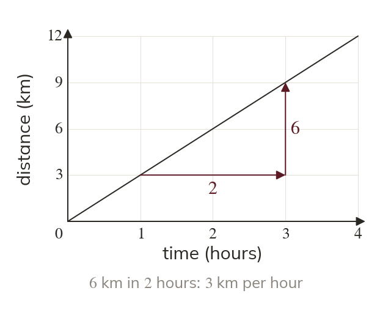
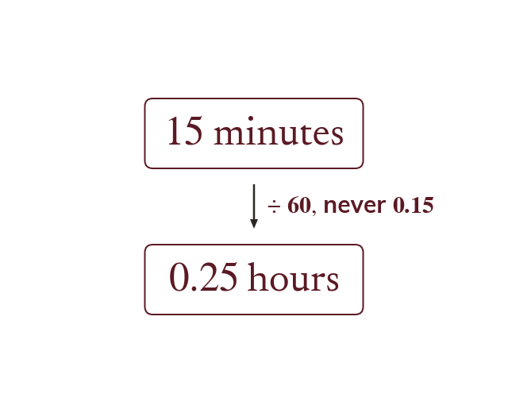
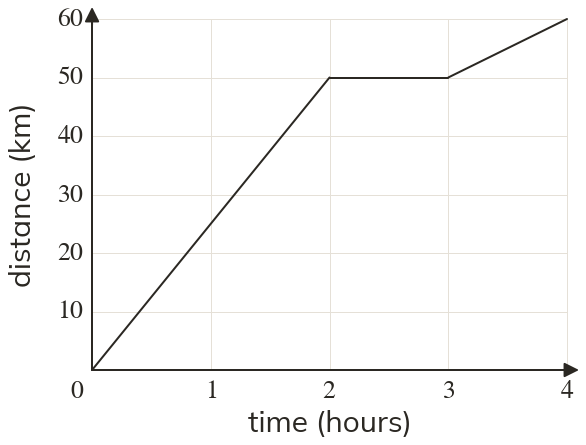
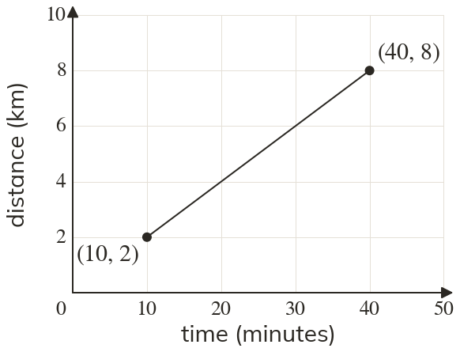
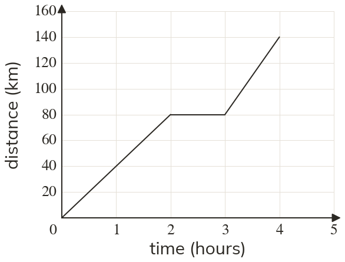
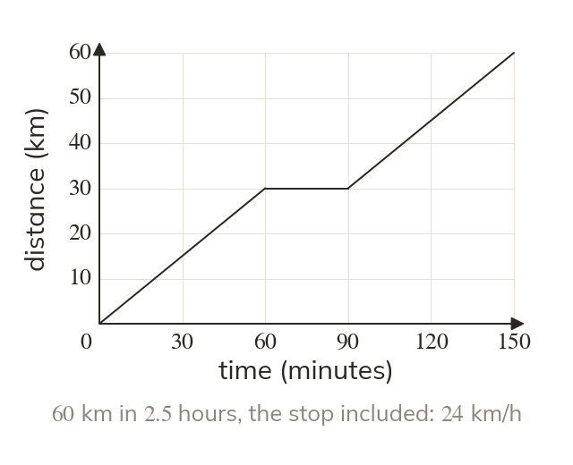
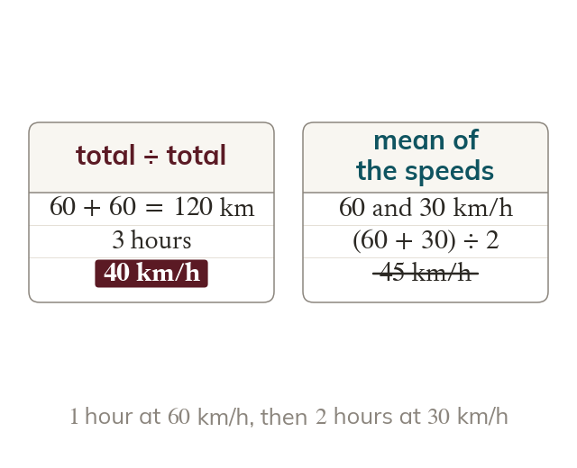
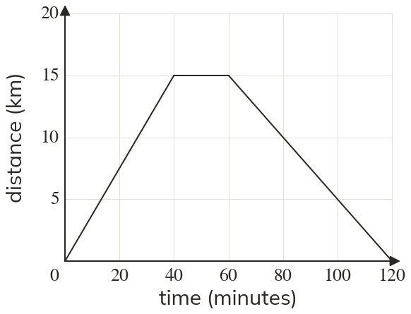

The gradient is the speed
The gradient of a distance-time graph is distance divided by time, which is the speed. Its units come from the axes, such as kilometres per hour.
Speedometers, sat-navs and race splits all rest on one fact: the gradient of a distance-time graph is the speed. Today we read speeds off graphs and find the average speed of a whole journey.
Work down the page at your own pace. Write every answer in your book first, then click to check it.
Read each card, then follow the worked examples one step at a time.

The gradient of a distance-time graph is distance divided by time, which is the speed. Its units come from the axes, such as kilometres per hour.

Change minutes into hours before dividing, for a speed in km/h. minutes is hours, never

Pick an answer. If it's wrong, the feedback tells you which mistake it was.

Printable worksheet — the questions with room to work.

Read each card, then follow the worked examples one step at a time.

Average speed is the total distance divided by the total time for the whole journey. Any time spent stopped still counts in the total time.

Stages that take different times cannot simply be averaged. The longer stage has more effect on the average speed.

Pick an answer. If it's wrong, the feedback tells you which mistake it was.
Finished? Next lesson: 8.13.4 Velocity-Time Graphs.
Log in, then search for a code to practise that skill.
Videos, worksheets and more on each part of this lesson.